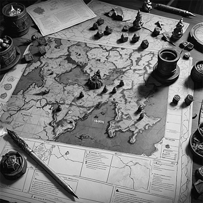

Dungeons and Dragons er et fantasifuldt rollespil, hvor du og dine venner opfinder historier og spiller roller i en imaginær verden. I udforsker sammen, kæmper mod monstre og løser mysterier. Spillet består af en Dungeon Master (DM) og 2 eller flere spillere. DM'en har en historie klar, som spillerne skal igennem, mens spillerne reagerer på DM'ens beskrivelser og scenarier ved at fortælle, hvad deres karakter gør og siger.

For at spille Dungeons and Dragons kan du bruge følgende redskaber:
Terninger:
Special terninger(info popup - beskrivelse af terningerne samt evt link.).
Karakter Ark, hvor du kan skrive din karakters oplysninger, færdigheder, og udstyr.
Blyant og papir til at skrive noter, tegne kort og holde styr på karakter information.
2-3 venner at spille med.
Dungeon Master (DM): (popup med beskrivelse)
Fantasien Den vigtigste ingrediens!
Hvordan man spiller:
Jeres DM starter med at fortælle hvor I er, og stemningen omkring jer.
Herfra, er det jeres tur til at bestemme, hvad I vil ud fra hvad I har fået fortalt.
Hvis I er i tvivl, så tænk over hvad jeres karakter ville gøre. Måske bliver I bedt om at slå med en terning. I skiftes en efter i med at slå terningen, og historien fortsætter i takt med hver spillers tur.